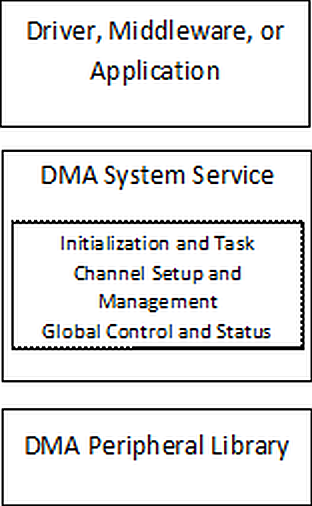

|
MPLAB Harmony Help Template
|
This library provides an abstraction of the DMA subsystem that is used by device drivers, middleware libraries and applications to transmit and receive data.
DMA Software Abstraction Block Diagram

DMA System Service
The DMA system services provide support for initializing the DMA controller, managing the transfer state machine, setup/management of channels, and global module control and status management.
Initialization and Tasks
Each software module (device driver, middleware, or application) that needs to use the DMA for data transfer must enable the DMA controller. This is normally done by calling the initialization routine of the DMA subsystem in the module's initialization routine, which is called by the SYS_Initialize service. The initialization routine returns a DMA module object, which should be used as a parameter in the call to Task routines.
The Task routines implement the data transfer state machine for synchronous and asynchronous data transfer operations. If Asynchronous (interrupt) mode of operation is desired, the Task routine (SYS_DMA_Tasks) should be called from the respective channel ISR. If Synchronous mode of operation if desired, the Task routine (SYS_DMA_Tasks) should be called from the SYS_Tasks function.
Channel Setup and Management
Any module that needs to use the DMA system service must request for channel allocation. An allocated channel is used to setup the channel parameters like the mode of operation(Basic, CRC, chaining etc). Setup the transfer trigger types(Synchronous/Asynchronous). Add a transfer by Setting up the source, destination address and transfer sizes. The DMA transfer starts either forcefully or based on events according to the setting. The channel status events are used to manage the data transfer.
Global Control and Status Management
Provides for control and status of the DMA module. The user can suspend a DMA operation or alternatively resume an already suspended operation. The status of last DMA operation can also be retrieved.
|
MPLAB Harmony Help Template
|